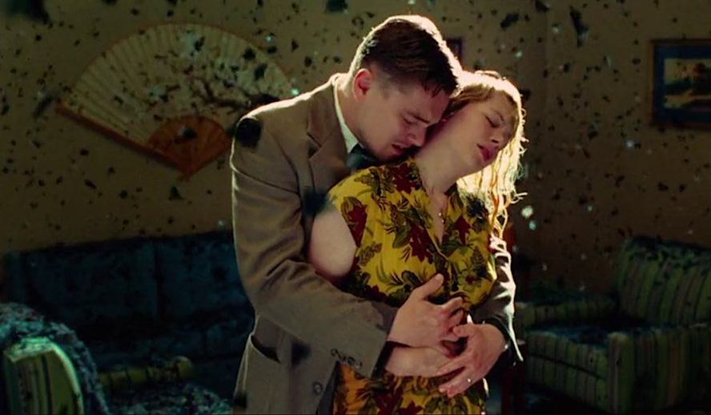
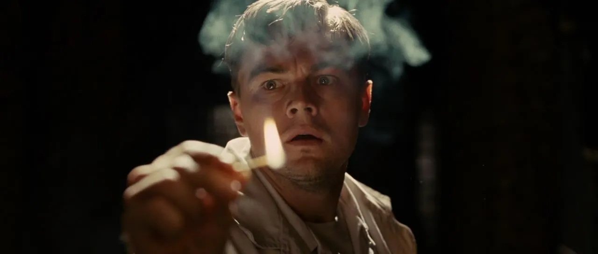

Shutter Island is a 2010 American neo-noir psychological thriller film directed by Martin Scorsese. The screenplay was adapted by Laeta Kalogridis from the 2003 novel of the same name by Dennis Lehane. It follows Deputy U.S. Marshal Edward "Teddy" Daniels and his partner Chuck, who come to the fictional Shutter Island in Boston Harbour to investigate its criminal psychiatric facility after one of its patients goes missing; Daniels has his own ulterior motives for taking the case. The film stars Leonardo DiCaprio and Mark Ruffalo, with Ben Kingsley, Max von Sydow and Michelle Williams in supporting roles.

A big part of the film’s power comes from how it explores the idea that people often construct narratives to survive unbearable memories. The island becomes a symbolic space where reality, memory, and imagination blur. You’re drawn into the same confusion as the main character, feeling the instability of his world rather than just observing it. The story digs into themes like institutional control, the ethics of psychiatric treatment in the 1950s, and how trauma rewrites identity.

Behind the scenes, Scorsese and Leonardo DiCaprio worked closely to shape the emotional tone of the character, with DiCaprio describing the role as one of the most psychologically intense of his career. The film was shot in real decommissioned asylums and prisons, including the historic Medfield State Hospital, which adds a cold, unsettling realism to the environment. The production team intentionally used harsh lighting, stormy weather, and disorienting set design to create a physical world that mirrors the mental chaos at the center of the story. Even the soundtrack, curated by Robbie Robertson, uses modern classical and avant-garde pieces to heighten the sense of unease.The film doesn’t rely on traditional twists to shock the audience; instead, it slowly shifts your understanding until you’re forced to see the story from a completely different angle. It’s the kind of movie you keep thinking about because its meaning changes the more you sit with it. Shutter Island is less about what happens and more about what it reveals—about memory, denial, and the terrifying places the mind can go to protect itself. I don’t think I’ve ever been as blown away by a plot twist as I was in this movie.